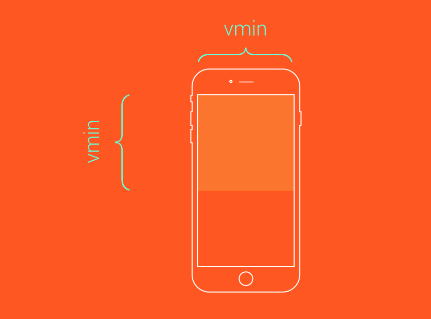

CSS Units
Одиниці виміру
-
%— у відсотках відносно іншого елементу (зазвичай батьківського) -
cm— у сантиметрах -
em— відносна одиниця. буде у розмірі шрифту батьківського елементу -
rem— відносна одиниця. Працює аналогічно "em", проте за базис бере шрифт від кореня (html) -
ex— відносна одиниця. анаглог em, проте вираховується залежно від FontFamily -
ch— відносна одиниця. відносно ширини "0" -
in— у дюймах -
mm— міліметри
Одиниці виміру (продовження)
-
pc— 1 pc = 12 pt -
pt— 1/72 дюйму -
px— піксель -
vh— 1% висоти екрану (view height) -
vw— 1% ширини екрану (view width) -
vmin— 1% меншої сторони екрану -
vmax— 1% більшої сторони екрану
Застарілі одиниці
- 1mm
- 1cm
- 1pt
- 1pc
- 1in
PX
- Чіткість
- Постійність
- Зрозумілість
- Гнучкість
%
- Гнучкість
- Функціональність
em та rem
- Гнучкість
- Зручність у використанні і підтримці
Проблема із EM

Проблема із EM
Проблема із EM
vmin
vmax
Чи є у вас запитання?